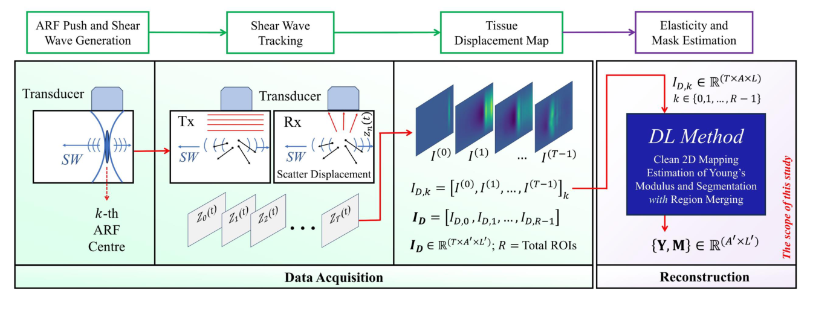
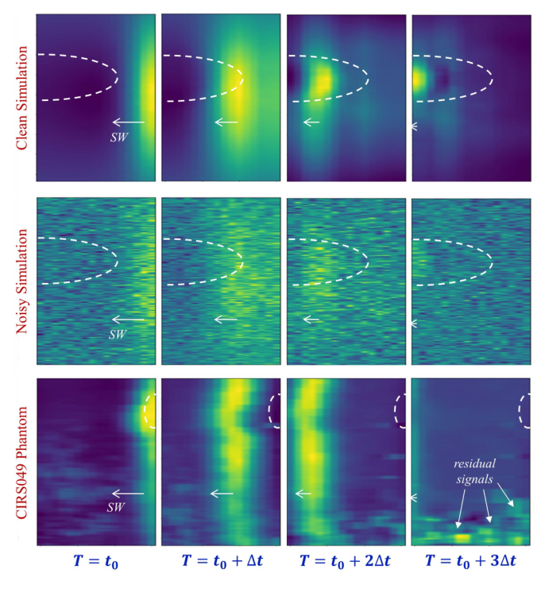
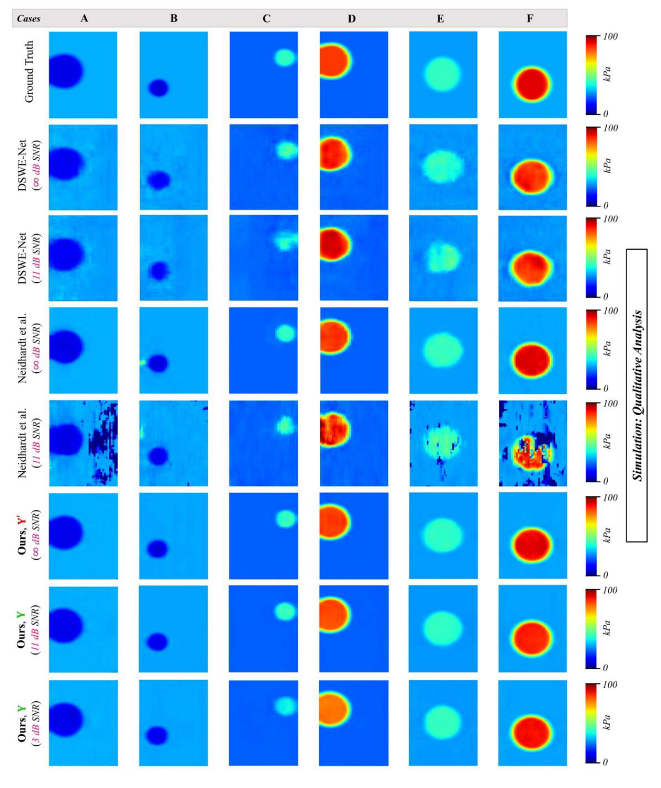

Why shear wave elastography needs a robust learned pipeline
Tissue stiffness separates pathology from healthy tissue: liver fibrosis sits above 8 kPa and breast tumours at 33–80 kPa, against roughly 5–10 kPa for fatty breast tissue. Shear wave elastography (SWE) measures it by pushing tissue with an acoustic radiation force (ARF) and tracking the resulting shear wave; Young’s modulus follows from the wave speed as E ≈ 3ρv². Classical time-of-flight and frequency-domain estimators break down when jitter, speckle and reflections corrupt the wave, and earlier deep models either lacked realistic noise in training or needed large windows and long run times.
Sequential multi-push SWE covers a wider region by firing several ARF pushes one after another, each imaging its own overlapping sub-region. This work learns the full chain from that motion data to a clean stiffness map and a lesion mask.
Abstract
Ultrasound shear wave imaging is a noteworthy tool for in-vivo noninvasive tissue pathology assessment and elasticity estimation. State-of-the-art techniques can generate reasonable estimates of tissue elasticity, but high quality and noise resiliency in SWE reconstruction have yet to see advances. We propose a two-stage deep-learning pipeline that produces reliable reconstructions from SWE motion data and denoises them to obtain higher-contrast, lower-noise elasticity maps. The reconstruction network uses a Resnet3D encoder to extract temporal context from the sequential multi-push data. The encoded features pass through multiple feature-level Nested CNN-LSTM blocks that process them in temporal-attention-guided windows and map temporal information into the spatial domain with an FFT-based attention module. The spatial features are decoded into a 2D elasticity modulus map as a primary reconstruction. The maps from each multi-push region are merged and sent to a dual-decoder denoiser that denoises the foreground (inclusion) and background independently before fusing them, producing a higher-quality reconstruction and an inclusion segmentation mask. Beyond a simple primary reconstruction loss, a multi-objective compound loss supervises denoising, fusion and mask generation. A patch-based training procedure handles data scarcity. The method is validated on simulated and experimental sequential multi-push SWE data and outperforms a spatio-temporal CNN and DSWE-Net quantitatively and qualitatively in the presence of noise.
Two stages: reconstruct, then denoise and segment

Stage 1 · Reconstruction network
- Resnet3D encoder extracts spatio-temporal features from each region’s motion volume.
- Multi-Nested-LSTM blocks window the temporal axis; a temporal-attention module weights salient time steps.
- FFT-based attention weights the magnitude spectrum of the spatially mapped features.
- SE-attention decoder outputs the 2D modulus map, trained with mean absolute error. Region outputs are merged with spatial windowing.
Stage 2 · Post-denoiser
- A ResNet-34 based encoder with SE attention is shared by two decoders, one for the inclusion and one for the background.
- A fusion block merges both into the denoised map and predicts the inclusion mask.
- Compound loss: foreground and background regional terms, a fusion term, total variation, and IoU.
Simulation and phantom data
- Simulation: 1,380 bi-level phantoms generated with COMSOL–MATLAB. Inclusion diameter 3–12 mm, inclusion stiffness 8–100 kPa, background 10–35 kPa, random positions; R = 4 sequential ARF pushes per ROI, tracked at 8 kHz. Evaluated both clean and with added noise.
- CIRS049 phantoms: a private set of 72 SWE cases across four phantom types (background 18–24 kPa, inclusions 6–76 kPa), 18 ROIs per phantom.

Reconstruction quality
Compared against DSWE-Net and the spatio-temporal CNN of Neidhardt et al. Y′ is the primary reconstruction; Y is the denoised output.
Inclusion segmentation
| Data | IoU ↑ | F1 ↑ | HD ↓ | ASSD ↓ |
|---|---|---|---|---|
| Simulation (clean) | 0.951 | 0.939 | 1.13 | 0.116 |
| Simulation (noisy) | 0.909 | 0.917 | 1.58 | 0.227 |
| CIRS049 phantoms | 0.781 | 0.873 | 6.40 | 0.863 |
Masks M produced by the post-denoiser alongside the modulus map.
Reconstructions

BibTeX
@article{alam2024robust,
title = {Robust CNN Multi-Nested-LSTM Framework with Compound Loss for
Patch-based Multi-Push Ultrasound Shear Wave Imaging and Segmentation},
author = {Alam, Md. Jahin and Habib, Ahsan and Hasan, Md. Kamrul},
journal = {arXiv preprint arXiv:2407.20558},
year = {2024}
}